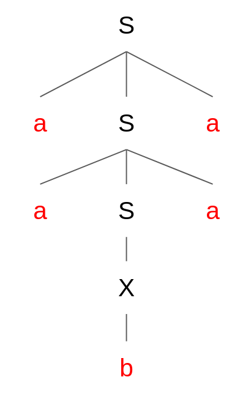

Chapitre 2 - Langages Hors-Contexte
Dernière mise à jour : 22/10/2026
Langages Hors-Contexte
Lors du chapitre précédent, nous avons vu les langages réguliers. Bien qu'intéressants, ces types de langage avaient une principale faiblesse : une mémoire finie. Par exemple, considérons l'alphabet $\{ a, b \}$ et le langage "les mots qui ont autant de $a$ que de $b$". Pour dire que ce langage est régulier, il faut pouvoir le représenter par une expression régulière (ou bien un automate fini). Cependant, on se rend vite compte qu'il est impossible de trouver une expression régulière pour ce langage :
- Si l'on utilise $(ab)*$, on obtient bien des mots avec autant de $a$ que de $b$. Cependant, les mots du genre $aabb$ ou $aabbba$ ne peuvent pas être générés, alors qu'ils contiennent bien autant de $a$ que de $b$.
- Si l'on utilise $(a|b)*$, on peut obtenir des mots qui n'ont pas autant de $a$ que de $b$.
- ...
En conséquence, on ne trouvera jamais d'expression régulière permettant de représenter ce langage. Cependant, nous allons découvrir un nouveau type de langage qui permet de le représenter : les langages hors-contexte.
Un langage hors-contexte est un langage qui peut être représenté par une grammaire hors-contexte ou un automate à pile. Souvent, on prouve qu'un langage est hors-contexte en le représentant par une de ces deux formes-ci.
Un langage hors-contexte n'est pas nécessairement un langage régulier. Ceci est dû au fait que les langages réguliers sont des sous-ensembles des langages hors-contexte, donc on peut très bien trouver un langage hors-contexte qui n'est pas régulier.
Classification de Langages
Nous pouvons classifier les différents types de langages que nous avons vus :

La représentation peut se visualiser comme les couches d'un oignon, où chaque nouvelle couche apporte de la précision et de la restriction quant aux langages possibles à représenter. On voit visuellement que si un langage est fini, alors il est également régulier et hors-contexte. Si un langage n'est pas fini mais régulier, il reste hors-contexte.
Grammaire Hors-Contexte
Une grammaire hors-contexte est un type de grammaire formelle permettant de décrire la syntaxe d'un langage. Une grammaire hors-contexte peut comprendre les éléments suivants :
- Terminal : élément/symbole qu'une grammaire hors-contexte peut générer. Un terminal est l'élément le plus fondamental d'une grammaire hors-contexte, et est écrit en minuscules : $a$, $b$, $c$, $if$, $payment$, etc.
- Non-Terminal : élément intermédiaire d'une grammaire hors-contexte qui n'apparaît pas dans les phrases générées. Un non-terminal peut être interprété comme une référence vers une ou plusieurs productions (et de façon ultime vers des terminaux, si la grammaire est bien formée) possibles de la grammaire, et est écrit en majuscules (souvent, une seule lettre) : $S$, $X$, $A$, etc.
- Symbole de Départ : non-terminal servant de point d'entrée pour une grammaire hors-contexte. Souvent, il est représenté par $S$.
- Production : règle d'une grammaire hors-contexte qui indique comment un symbole non-terminal peut être remplacé par une suite d'autres symboles (terminaux et/ou non-terminaux). On représente une production par la forme $A \rightarrow b$, avec $A$ un symbole non-terminal et $b$ une suite de symboles (pouvant contenir des terminaux et des non-terminaux, voire être vide).
Par exemple, prenons la grammaire hors-contexte $S \rightarrow a$. Cette grammaire indique que lorsqu'on va dans le non-terminal $S$, on doit appliquer l'unique production $S \rightarrow a$, c'est-à-dire générer le terminal $a$. Vu que le non-terminal $S$ est le symbole de départ, on sait que c'est le point d'entrée dans notre grammaire. En conséquence, cette grammaire simple représente le langage du mot $a$.
Prenons un exemple un peu plus avancé :
S -> a | B
B -> b | c | ε
Dans cette grammaire hors-contexte, on retrouve le non-terminal de départ $S$ qui permet de produire soit un terminal $a$, soit un non-terminal $B$. Si l'on choisit de produire $B$, on doit aller voir ce qu'on peut générer dans les productions de $B$ : soit un terminal $b$, soit un terminal $c$, soit rien (représenté par un caractère epsilon $\varepsilon$). En conséquence, cette grammaire permet de générer les mots suivants : $\{ a, b, c, \varepsilon \}$.
Prenons un dernier exemple :
S -> aSa | X
X -> b | c
Cette grammaire hors-contexte représente le langage $L = \{a^nxa^n | x \in \{b, c\}, n \ge 0\}$. On remarque qu'il est possible d'utiliser le même non-terminal dans une production que celui qui le produit. Ce mécanisme de récursivité permet aux grammaires hors-contexte de générer des ensembles potentiellement infinis de mots. On remarque également qu'on peut concaténer des terminaux et des non-terminaux tels que $aSa$. En faisant cela, l'élément entre les deux $a$ correspondra à une des productions de $S$.
Dérivation et Arbre Syntaxique
Dérivation : en partant du non-terminal de départ d'une grammaire hors-contexte, montrer comment un mot peut être obtenu en suivant l'ensemble de règles définies par ce non-terminal. Si un mot peut être dérivé en suivant les règles d'une grammaire hors-contexte, alors ce mot peut être représenté par la grammaire hors-contexte.
Il est également possible de représenter une dérivation sous forme d'un arbre syntaxique. Si l'on reprend la grammaire précédente, nous pouvons représenter la dérivation du mot $aabaa$ sous forme d'un arbre syntaxique :

S'il existe plusieurs dérivations possibles avec une grammaire hors-contexte pour un même mot, on dit que la grammaire hors-contexte est ambiguë.
Improductif et Inaccessible
Il est possible qu'une grammaire hors-contexte soit malformée, menant à des problèmes de génération de mots et à des problèmes de structure. Ces malformations peuvent être de deux types :
- Improductif : un non-terminal est dit improductif si aucune dérivation à partir de ce non-terminal ne permet de produire une chaîne composée uniquement de symboles terminaux.
- Inaccessible : un non-terminal est dit inaccessible s'il n'est jamais atteint à partir du symbole de départ $S$ lors d'une dérivation.
Par exemple, dans la grammaire hors-contexte suivante :
S -> A | B
A -> a | b
B -> Ba
C -> c | d
Le non-terminal $B$ est improductif (ne génère jamais une chaîne de terminaux) et le non-terminal $C$ est inaccessible (ne peut jamais être atteint en partant de $S$). En supprimant ces improductifs et inaccessibles, la grammaire devient :
S -> A
A -> a | b
Et encore plus simplement :
S -> a | b
Si un non-terminal $X$ contient des productions $\alpha$, $\beta$, $\gamma$, et que la production $\beta$ contient un élément qui mène à un improductif, il suffit de supprimer la production $\beta$ du non-terminal. Les productions $\alpha$ et $\gamma$ sont elles-mêmes préservées, tant qu'elles ne contiennent pas d'improductifs.
Automate à Pile
Un automate à pile est une machine abstraite comportant les éléments suivants :
- Un ensemble d'états.
- Un état initial.
- Un ensemble d'états terminaux.
- Un ruban, permettant de lire un mot donné. La fin de lecture est représentée par le caractère $\#$.
- Une tête de lecture (indique l'emplacement de lecture actuel).
- Une pile LIFO (Last In First Out), permettant d'empiler et de dépiler des états.
- Des règles de transition. $(I, a, F)$ = si l'état $I$ est en haut de la pile et que le token $a$ est rencontré en lecture du ruban, alors le token $a$ est lu et l'état $F$ va remplacer l'état $I$ dans la pile. Fonction de transition : on passe d'un état à un autre.
Les automates à pile sont des généralisations des automates finis, car un automate à pile dispose d'une mémoire infinie organisée en pile.
Un automate à pile est dit déterministe si :
- L'automate ne comprend pas de transitions $\varepsilon$ (ne rien lire et avancer "gratuitement"), c'est-à-dire pas de $(I, \varepsilon, F)$.
- L'automate ne permet pas la lecture du même symbole depuis un état vers des états différents, c'est-à-dire pas de $(I, a, E1)$ et $(I, a, E2)$, car $a$ pourrait prendre la transition vers l'état $E1$ ou $E2$.
Exercices
Vrai ou Faux
Déterminez si les affirmations suivantes sont vraies ou fausses et justifiez.
Tout langage régulier est hors-contexte.
Réponse
Vrai
Tout langage hors-contexte est régulier.
Réponse
Faux
Tout langage fini est hors-contexte.
Réponse
Vrai
Toute expression régulière est exprimable sous la forme d'une grammaire hors-contexte.
Réponse
Vrai
On peut représenter un langage fini par une grammaire hors-contexte et un automate fini.
Réponse
Vrai
Tout sous-langage d'un langage régulier est régulier.
Réponse
Faux (piège)
Exemple : le langage de tous les mots possibles sur $\Sigma$ est bien régulier. Cependant, le langage des palindromes sur $\Sigma$ est bien un sous-ensemble du précédent, mais n'est pas régulier.
Reconnaissance de Langages
Soient les langages suivants définis sur l'alphabet $\Sigma = \{a, b, c\}$. Déterminez s'ils sont hors-contexte et justifiez.
Le langage des mots de la forme $a^nc^nc^n, n \ge 0$.
Réponse
Peut être simplifié par $a^n c^{2n}$
- Fini ? Non, car on ne peut pas énumérer l'ensemble des mots du langage (infini).
- Régulier ? Non, car on ne peut pas représenter le langage par une expression régulière/automate fini. L'information $n$ ne peut pas être retenue ; par exemple, si exposant $n \lt 5$, il aurait été possible de trouver une regex mais pas le cas ici.
- Hors-contexte ? Oui, il est possible de représenter le langage avec la grammaire hors-contexte suivante :
S -> aScc | ε
Le langage des mots de la forme $a^nba^n, n \ge 0$.
Réponse
- Fini ? Non, car on ne peut pas énumérer l'ensemble des mots du langage (infini).
- Régulier ? Non, car on ne peut pas représenter le langage par une expression régulière/automate fini. On ne peut pas garantir que le nombre de $a$ à gauche sera le même qu'à droite.
- Hors-contexte ? Oui, il est possible de représenter le langage avec la grammaire hors-contexte suivante :
S -> aSa | b
On n'ajoute pas de mot vide ($\varepsilon$) car il y aura toujours au moins un $b$ dans un mot généré par le langage.
Le langage des mots de la forme $a^nb^m, n \gt m \ge 0$.
Réponse
- Fini ? Non, car on ne peut pas énumérer l'ensemble des mots du langage (infini).
- Régulier ? Non, car on ne peut pas représenter le langage par une expression régulière/automate fini. On ne peut pas garantir les conditions imposées sur le nombre de $a$ et de $b$.
- Hors-contexte ? Oui, il est possible de représenter le langage avec la grammaire hors-contexte suivante :
S -> aSb | aS | a
Pas de mot vide ($\varepsilon$) car la condition impose que $n \ge 1$, donc il y aura toujours au moins un $a$.
Le langage des mots qui contiennent autant de $a$ que de $b$ et aucun $c$.
Réponse
- Fini ? Non, car on ne peut pas énumérer l'ensemble des mots du langage (infini).
- Régulier ? Non, car on ne peut pas représenter le langage par une expression régulière/automate fini. On ne peut pas garantir qu'un mot généré ait autant de $a$ que de $b$.
- Hors-contexte ? Oui, il est possible de représenter le langage avec la grammaire hors-contexte suivante :
S -> aSbS | bSaS | ε
Le langage des palindromes (mots qui peuvent se lire de la même façon dans le sens inverse).
Réponse
- Fini ? Non, car on ne peut pas énumérer l'ensemble des mots du langage (infini).
- Régulier ? Non, car on ne peut pas représenter le langage par une expression régulière/automate fini. On ne peut pas garantir qu'un mot généré ait la forme d'un palindrome.
- Hors-contexte ? Oui, il est possible de représenter le langage avec la grammaire hors-contexte suivante :
S -> aSa | bSb | cSc | a | b | c | ε
Il ne faut pas oublier de prendre en compte les cas avec une lettre au milieu (e.g., $aca$) et cas avec 2 lettres au milieu (e.g., $bccb$) (= palindromes pairs et impairs).
Le langage des mots de la forme $c(a|b)^nc(a|b)^n c, n \ge 0$.
Réponse
- Fini ? Non, car on ne peut pas énumérer l'ensemble des mots du langage (infini).
- Régulier ? Non, car on ne peut pas représenter le langage par une expression régulière/automate fini. On ne peut pas garantir le même nombre $n$ des combinaisons de $a$ et de $b$.
- Hors-contexte ? Oui, il est possible de représenter le langage avec la grammaire hors-contexte suivante :
S -> cXc
X -> YXY | c
Y -> a | b
Le langage des mots répétés $\{w.w \mid w \in \Sigma^*\}$.
Réponse
- Fini ? Non, car on ne peut pas énumérer l'ensemble des mots du langage (infini).
- Régulier ? Non, car on ne peut pas représenter le langage par une expression régulière/automate fini. On ne peut pas garantir que le mot $w$ soit généré deux fois de la même façon.
- Hors-contexte ? Non, car on ne peut pas représenter le langage par une grammaire hors-contexte/automate à pile.
Une grammaire hors-contexte peut gérer des dépendances équilibrées (e.g., $a^nb^n$), mais pas des dépendances plus complexes. Par exemple, recopier un même mot de longueur inconnue est impossible avec une grammaire hors-contexte/automate à pile car une mémoire proportionnelle au mot serait requise.
Suppression d'Improductifs et Inaccessibles
Supprimez les improductifs et les inaccessibles des grammaires suivantes.
Grammaire 1
Réponse
S -> a | A
A -> AB
B -> b
- $A$ est improductif.
- En supprimant $A$ (improductif), $B$ devient inaccessible.
La grammaire hors-contexte devient donc simplement :
S -> a
Grammaire 2
Réponse
S -> T | U
U -> aYb | V
V -> W
X -> W | a
Y -> Z
Z -> c | ε
IMPRODUCTIFS
En appliquant l'algorithme, on peut en premier lieu marquer les non-terminaux étant productifs sur base des terminaux présents :
- On marque $X$ comme productif car il produit un terminal $a$.
- On marque $Z$ comme productif car il produit un terminal $c$.
- On marque $Y$ comme productif car il produit $Z$, qui est lui-même productif.
- On marque $U$ comme productif car il produit $aYb$, contenant $Y$ qui est lui-même productif et $a, b$ qui sont des terminaux.
- On marque le non-terminal de départ $S$ comme productif car il produit $U$, qui est lui-même productif.
On trouve donc les non-terminaux productifs suivants : $\{S, U, X, Y, Z\}$. On va à présent supprimer les non-terminaux de la grammaire n'étant pas repris dans l'ensemble des productifs :
- On supprime $T$ dans $S$.
- On supprime $V$ dans $U$.
- On supprime $V \rightarrow W$ car il n'est pas productif.
- On supprime $W$ dans $X$.
INACCESSIBLES
En appliquant l'algorithme, on peut marquer les non-terminaux accessibles sur base des non-terminaux produits par des accessibles :
- $S$ est le symbole de départ, il est donc accessible.
- $U$ est compris dans le non-terminal accessible $S$, il est donc accessible aussi.
- $Y$ est compris dans le non-terminal accessible $U$, il est donc accessible aussi.
- $Z$ est compris dans le non-terminal accessible $Y$, il est donc accessible aussi.
On obtient finalement la grammaire réduite suivante :
S -> U
U -> aYb
Y -> Z
Z -> c | ε
Ce qui est davantage simplifié en :
S -> aYb
Y -> c | ε
Et même encore :
S -> acb | ab
Dérivation et Arbres
Soit la grammaire hors-contexte suivante :
S -> O, S | O
O -> debit X from A | credit X to A
X -> 100 | 200 | 300
A -> bob | alice | steve
Générez l'arbre syntaxique correspondant au mot debit 200 from steve, credit 100 to alice.
Réponse
Cf. tableau
Cette grammaire est-elle ambiguë ?
Réponse
Non, car il n'existe pas plusieurs dérivations possibles pour un même mot du langage.
Donnez un exemple d'une grammaire hors-contexte qui est ambiguë.
Réponse
S -> S + S | S * S | a
Cette grammaire est ambiguë car il existe plusieurs dérivations possibles pour un même mot du langage. Par exemple, le mot a + a * a peut être dérivé de deux façons différentes :
- Multiplication en premier :
S --> S * S --> (S + S) * S --> (a + a) * a - Addition en premier :
S --> S + S --> S + (S * S) --> a + (a * a)